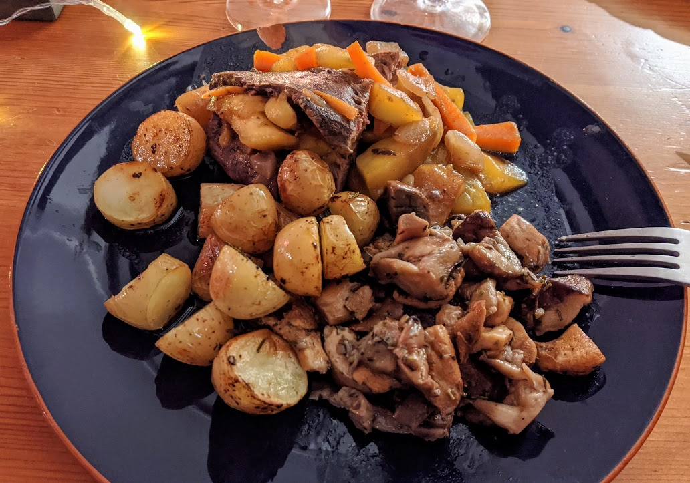

Magrets de canards farcis

Ici avec des petites patates rôties et une poêlée de champignons.
Pour 4 personnes :
- Deux gros magrets de canard (300-350g chaque)
- Un demi-oignon, ou un petit oignon
- Une demi-courgette, ou une très petite courgette
- Une petite carotte
- Une demi-mangue
- 4 cuillères à soupe de miel
- Une cuillère à soupe de vinaigre balsamique
- Sel, poivre
- Couper les magrets quasiment en deux dans le sens de la largeur, et au cœur de la partie la plus grosse, faire une incision au centre pour former une poche.
- Saler et poivrer les magrets à l'extérieur et à l'intérieur, puis les faire chauffer dans une poêle à feu vif côté peau (sans graisse) jusqu'à ce qu'il prenne une jolie couleur (grillée sur le dessous, cuits autour).
- Pendant que ça cuit, éplucher les légumes, émincer l'oignon et couper la demi-courgette et la carotte en petits bâtonnets fins.
- Retirer les magrets lorsqu'ils ont pris une bonne couleur, et faire cuire les légumes dans la même poêle (toujours à feu vif) pendant 4 minutes. Pendant ce temps, éplucher et couper la mangue en fines tranches, les rajouter dans la poêle et les faire cuire 5 minutes supplémentaires.
- Éteindre le feu, ajouter le vinaigre et le miel, mélanger, et farcir les magrets avec le mélange. Les envelopper dans du papier d'aluminium, et les faire cuire à feu doux dans la même poêle pendant un quart d'heure, en leur faisant passer la même quantité de temps de chaque côté.
- Servir chaud, avec des patates douces, ou d'autres légumes d'automne.
Retour à la liste des recettes